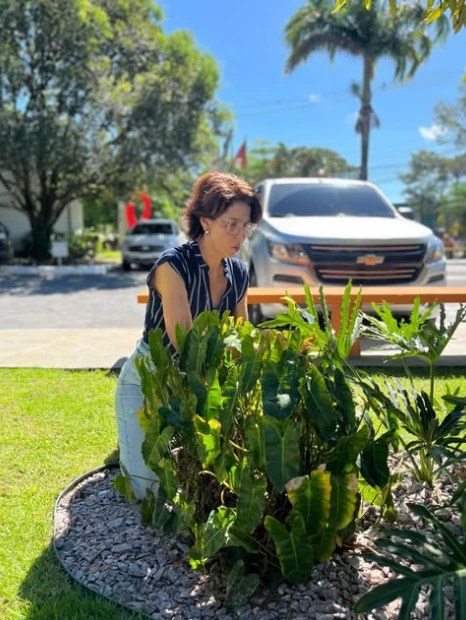
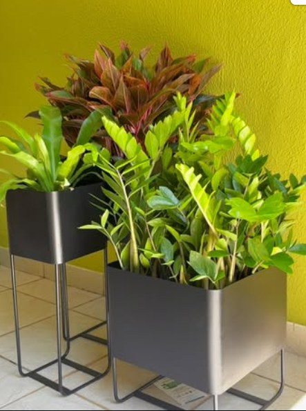

Jardins que dançam com o vento de Belém.
Projeto, implantação e cuidado de jardins tropicais para casas, condomínios e empresas. Passe o mouse ou o dedo no jardim e sinta a brisa.
Do projeto ao jardim que cresce bem
Cada espaço tem luz, sombra e chuva diferentes. A gente escolhe as plantas certas para o clima de Belém e cuida para que elas fiquem bonitas o ano todo.

Cuidado de perto, planta por planta
Jardim bonito é jardim acompanhado. Quem planta conhece cada canteiro e volta para cuidar.
- Plantas escolhidas para o sol e a chuva de Belém.
- Canteiros com acabamento em pedras e bordas definidas.
- Visitas de manutenção para poda, adubação e limpeza.
- Orientação para você cuidar do jardim entre uma visita e outra.
Verde também dentro de casa
Vasos e floreiras com plantas que vivem bem em ambientes internos, para salas, varandas, recepções e escritórios.

Plantas da nossa terra
Espécies tropicais que amam o calor e a umidade da Amazônia.
Como trabalhamos
Simples e sem surpresas.
Conversa
Você conta o que imagina pelo WhatsApp ou por telefone.
Visita
Avaliamos o espaço, a luz, o solo e a drenagem.
Projeto e orçamento
Proposta com as plantas, os materiais e o valor.
Plantio e cuidado
Implantação do jardim e manutenção, se você quiser.
Vamos plantar?
Conte sobre o seu espaço e receba o orçamento pelo WhatsApp.